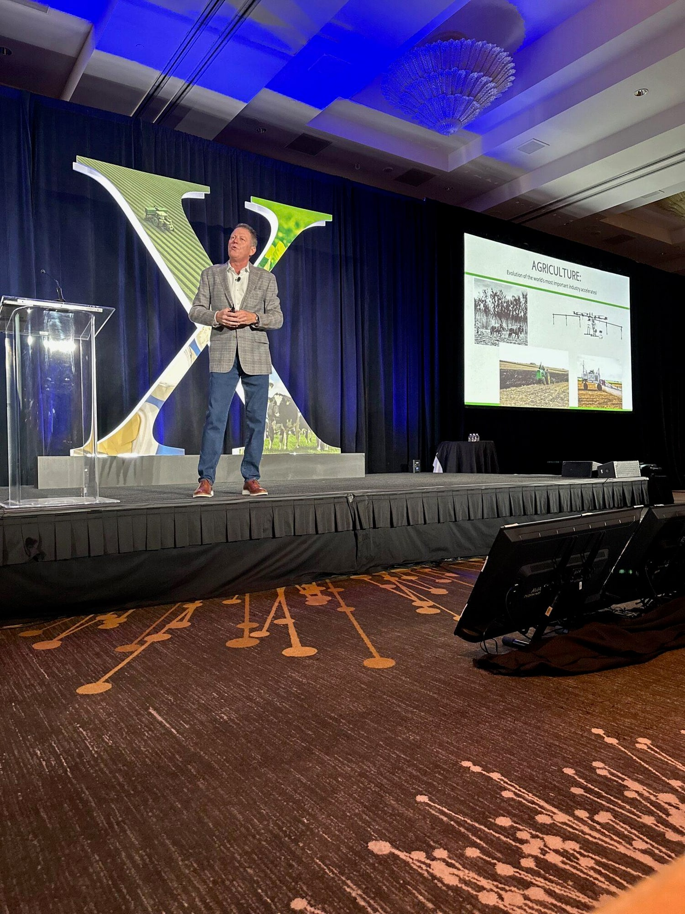
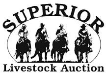

Keynote Speaker • Media Guest • Podcaster • Author
Straight-Forward Agriculture Dialogue
A Powerhouse in the Agriculture industry, Damian Mason travels the globe to speak about the industry he loves.
- Credentials
- Purdue Ag Econ. Second City Chicago. SAG member.
- Programs
- Keynotes, breakouts, and panel discussions.
- Home Office
- A working farm in Indiana.

2,400+
Audiences addressed
Corporate meetings, commodity boards, farm bureaus.
50
States
Plus 7 foreign countries.
1994
Speaking since
The year he quit the Fortune 500 job.
40,000+
Monthly listeners
The Business of Agriculture podcast.
Not Your Boring Ag Speaker, Damian is:
- Thought Provoking
- Engaging
- Enthusiastic
- Hilarious
Damian Mason has an exceptional understanding of the Agriculture industry, he’s been involved in it his entire life. That, combined with his passion to stay one step ahead of what’s looming for the industry, he works tirelessly to stay up to date with current trends, research current events and news, and connect with industry leaders. He provides immediate take-aways, future outlooks, and insights, to his audiences, but most importantly, Damian has an uncanny ability to stir up feelings of dignity and pride for people working in the most important industry in the world.
Some of Damian’s Clients:

Farm credit · Commodity boards · Input manufacturers · Farm bureaus
Repeat business is the hallmark
What People Are Saying…
“Man, that guy makes you think! I loved it!”
On the book
“I absolutely love this book! If you love food and hate the hype, this book is for you!”
★ ★ ★ ★ ★
The Business of Agriculture
Connecting people of the world’s most important industry.
You don’t need anyone telling you the weather forecast or the commodity prices, technology does that for you! What you need is a connection with real-world agriculture people and topics that inform, educate, and help you grow.
The Business of Agriculture:
70,000+
More Than 70,000 Views & Downloads Per Month. Podcast by Damian Mason.